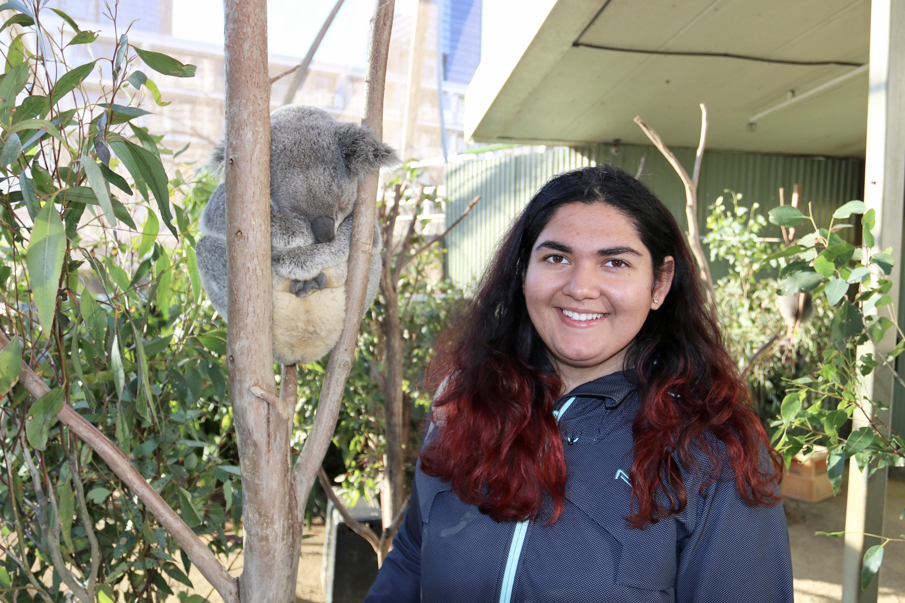
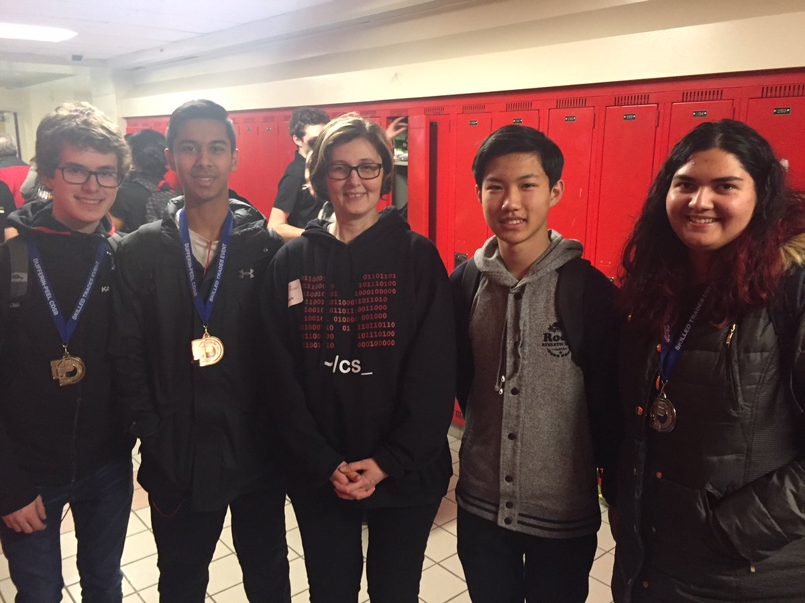

My most favourite thing to do is to travel! I think that travelling to new places serves as a great way of learning new things.
Another one of my other passions include coding. I was apart of my high school's Computer Science in which I was able to participate in various contests.